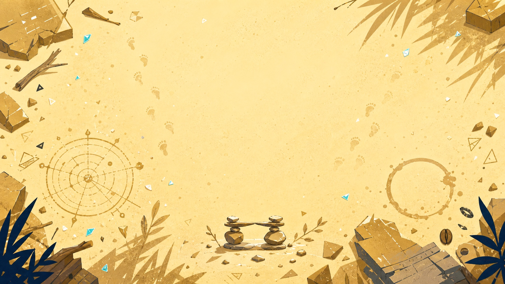

Memory fragment 01 / Radar
SONAR
响应式游戏百科与搜索界面
以雷达扫描为核心视觉隐喻，整合游戏资讯、搜索、资料库和多端适配。荧光目标点与深色界面对应“寻找记忆坐标”的主题。
查看设计档案
Surface / Conscious MemoryHI
Dive intoMemories
Below the surface / Personal portfolio
从海滩表层下潜，三份作品化作沉入心灵之海的记忆碎片。滚动页面时，深海海床保持稳定，雷达、天平与咖啡剪影在前景中形成不同的观看窗口。
Memory fragment 01 / Radar
响应式游戏百科与搜索界面
以雷达扫描为核心视觉隐喻，整合游戏资讯、搜索、资料库和多端适配。荧光目标点与深色界面对应“寻找记忆坐标”的主题。
查看设计档案Memory fragment 02 / Balance
幻想 RPG 系统界面与命运叙事
以天平、判断与命运为视觉核心，组织角色、任务、背包、奖励等复杂系统。古金与深蓝构成庄重、克制的幻想界面层级。
查看设计档案Memory fragment 03 / Coffee
移动端校园咖啡点单服务
将日常饮品、门店选择与点单流程视为温暖的生活记忆。咖啡棕、奶油白与海沫绿弱化深海的冷感，让最后一段碎片回到亲切的人间尺度。
查看设计档案